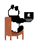
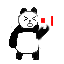
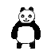
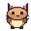
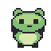
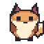
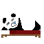

Settle in
Your pet sits quietly in a screen corner. Nudge counts time by app category on your Mac, without an account or cloud sync.
Nudge is a tiny desktop pet that keeps you company while you work and reminds you to step away before your energy runs out.
Free and open source · Apple Silicon beta · unsigned build

Illustration of Nudge over your everyday apps. The pet floats in the corner; it is not a full-screen app.
Four small companions, one shared goal: make it a little easier to look after yourself while you work.

Panda
Miso
Puddle
PipBuilt for the rhythm of an actual workday, not another dashboard to manage.

Your pet sits quietly in a screen corner. Nudge counts time by app category on your Mac, without an account or cloud sync.
As the work stretches on, your pet gets tired. Gentle reminders arrive on a schedule you choose.

Take a break and let both of you recharge. Your daily and weekly reports show where your time went.
No streak pressure. No crowded productivity cockpit. Just a companion you can make your own.
Set the interval, pick a tone, or keep only the timed nudges. Your own notes can become reminders too.
See a simple daily and weekly breakdown by app category, with breaks alongside work time.
Your activity and preferences stay on your Mac. Pause tracking or clear your activity history when you want.
Nudge is free, open source, and currently available as an unsigned Apple Silicon beta. Read the release notes before installing.
View the macOS beta